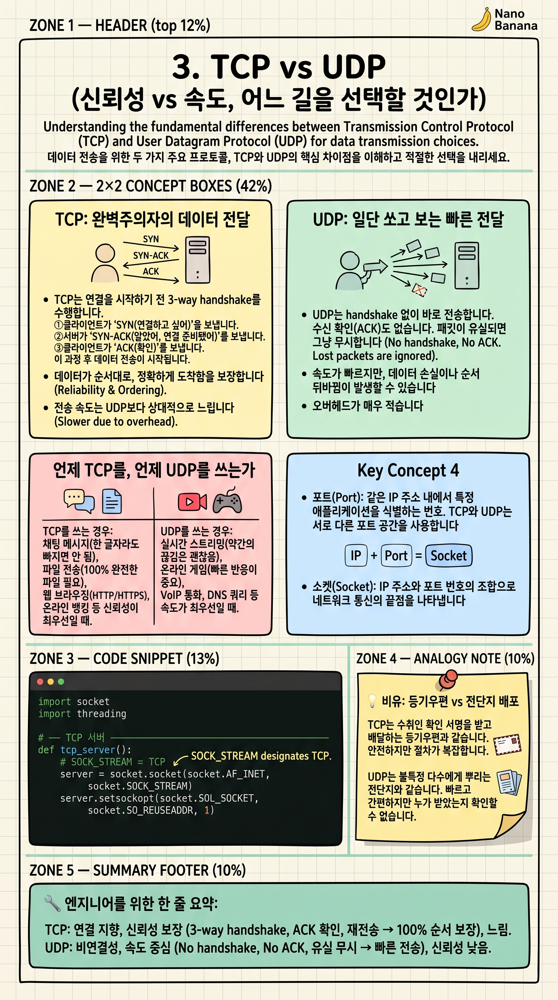

TCP vs UDP

🎯 학습 목표
- TCP의 3-way handshake 과정을 순서대로 설명할 수 있다
- UDP가 TCP보다 빠른 이유를 설명할 수 있다
- WebSocket과 RTSP가 각각 TCP/UDP를 사용하는 이유를 설명할 수 있다
- 실제 서비스에서 TCP와 UDP 중 어느 것을 선택해야 할지 판단할 수 있다
인터넷에서 데이터를 전달하는 방법은 크게 두 가지입니다. TCP(Transmission Control Protocol)는 데이터가 반드시 순서대로, 손실 없이 도착함을 보장합니다. UDP(User Datagram Protocol)는 이런 보장 없이 그냥 빠르게 보냅니다.
이 선택이 WebSocket vs RTSP 차이의 핵심입니다. WebSocket은 TCP 위에서 동작하므로 AI 분석 결과(텍스트)가 단 1바이트도 빠짐없이 전달됩니다. RTSP/RTP는 UDP를 사용하므로 일부 영상 프레임이 손실돼도 화면이 멈추지 않고 계속 흐릅니다.
'어느 것이 더 좋다'는 없습니다. 채팅 메시지는 TCP, 실시간 영상은 UDP가 적합한 것처럼 용도에 따라 선택하는 것이 핵심입니다.
핵심 내용
TCP: 완벽주의자의 데이터 전달
TCP는 연결을 시작하기 전 3-way handshake를 수행합니다. ①클라이언트가 'SYN(연결하고 싶어)' 전송 → ②서버가 'SYN-ACK(알겠어, 나도 연결 준비됐어)' 응답 → ③클라이언트가 'ACK(확인)' 전송. 이 과정 후에야 데이터를 전송합니다.
데이터를 전송할 때마다 수신 측이 'ACK(잘 받았어)'를 돌려보냅니다. 일정 시간 내에 ACK가 안 오면 재전송합니다. 패킷이 순서가 뒤바뀌어 도착하면 재조립합니다. 결국 모든 데이터가 보낸 순서 그대로 완벽하게 도착이 보장됩니다.
이 철저한 확인 작업 때문에 오버헤드가 생깁니다. 실시간 영상처럼 약간의 손실은 괜찮지만 지연이 치명적인 상황에는 적합하지 않습니다.
UDP: 일단 쏘고 보는 빠른 전달
UDP는 handshake 없이 바로 전송합니다. 수신 확인(ACK)도 없습니다. 패킷이 유실되면 그냥 무시하고 다음 패킷을 보냅니다. 헤더 크기도 TCP(20바이트)의 절반인 8바이트뿐입니다.
이 단순함 덕분에 지연 시간이 매우 짧습니다. 손실된 패킷을 기다리며 전체 스트림을 멈추는 TCP의 '헤드-오브-라인 블로킹(Head-of-Line Blocking)' 문제가 없습니다. RTSP 영상 스트리밍에서 프레임 하나가 손실되면 화면이 잠깐 깔끔하지 않아도(블록 깨짐), 스트림은 계속 흐릅니다.
최신 HTTP/3(QUIC) 프로토콜도 UDP 기반입니다. UDP 위에 자체적인 신뢰성 메커니즘을 구현해 TCP의 단점을 극복하면서 UDP의 속도를 취했습니다.
언제 TCP를, 언제 UDP를 쓰는가
TCP를 쓰는 경우: 채팅 메시지(한 글자라도 빠지면 안 됨), 파일 전송(100% 완전한 파일 필요), 이메일, 금융 거래, AI 분석 결과 전달. 데이터 무결성이 속도보다 중요할 때입니다.
UDP를 쓰는 경우: 실시간 영상 스트리밍(RTSP, RTP), 온라인 게임 캐릭터 위치 전송(1초 전 위치는 의미 없음), VoIP 전화(약간의 잡음은 허용), DNS 조회(질문-응답 한 번, 빠를수록 좋음). 최신성이 완전성보다 중요할 때입니다.
우리가 이전 챕터에서 봤던 시스템 다이어그램에서 AI 분석 결과를 브라우저로 스트리밍할 때 WebSocket(TCP)을 쓴 이유는 '분석 결과 텍스트는 단 한 글자도 빠져서는 안 되기 때문'입니다.
💡 비유로 이해하기
TCP는 등기 우편입니다. 발송 전 상대방이 받을 준비가 됐는지 확인하고(handshake), 편지마다 수령 확인 서명을 받습니다(ACK). 실패하면 재발송합니다. 100% 도착을 보장하지만 느립니다.
UDP는 아파트 전단지 배포입니다. 각 호수 문 앞에 전단지를 밀어 넣습니다. 어떤 집은 문이 잠겨 전단지가 바닥에 떨어질 수 있지만(패킷 유실), 그냥 무시하고 다음 집으로 넘어갑니다. 빠르지만 100% 전달을 보장하지 않습니다.
실시간 CCTV 영상을 생각해보세요. 지금 이 순간의 영상을 보는 게 목적입니다. 1초 전 영상이 완벽히 도착하길 기다리느라 현재 영상이 멈추는 것(TCP의 문제)보다, 1초 전 영상은 잠깐 깨지더라도 현재 영상이 계속 흐르는 것(UDP의 접근)이 훨씬 나은 사용자 경험입니다.
💻 코드 예시
Python의 socket 라이브러리로 TCP 서버와 클라이언트를 구현합니다. TCP의 연결 지향적 특성(bind→listen→accept→send/recv 과정)과 UDP의 비연결성(bind→sendto/recvfrom 차이)을 비교해봅니다.
import socket
import threading
# ── TCP 서버 ────────────────────────────────────────────────
def tcp_server():
server = socket.socket(socket.AF_INET, socket.SOCK_STREAM) # SOCK_STREAM = TCP
server.setsockopt(socket.SOL_SOCKET, socket.SO_REUSEADDR, 1)
server.bind(("127.0.0.1", 9001))
server.listen(1) # 연결 대기 (listen = 수신 준비)
print("[TCP 서버] 대기 중...")
conn, addr = server.accept() # 클라이언트 연결 수락 (3-way handshake 완료)
print(f"[TCP 서버] {addr} 연결됨")
data = conn.recv(1024)
print(f"[TCP 서버] 수신: {data.decode()}")
conn.send(b"TCP: 데이터 완벽 수신 확인!")
conn.close()
server.close()
# ── UDP 서버 ────────────────────────────────────────────────
def udp_server():
server = socket.socket(socket.AF_INET, socket.SOCK_DGRAM) # SOCK_DGRAM = UDP
server.bind(("127.0.0.1", 9002))
print("[UDP 서버] 대기 중...")
data, addr = server.recvfrom(1024) # handshake 없이 바로 수신
print(f"[UDP 서버] {addr}로부터 수신: {data.decode()}")
server.sendto(b"UDP: 빠른 응답!", addr)
server.close()
# ── 실행 ────────────────────────────────────────────────────
# 서버들을 백그라운드 스레드로 시작
for fn in [tcp_server, udp_server]:
threading.Thread(target=fn, daemon=True).start()
import time; time.sleep(0.1) # 서버 시작 대기
# TCP 클라이언트
tcp_client = socket.socket(socket.AF_INET, socket.SOCK_STREAM)
tcp_client.connect(("127.0.0.1", 9001)) # 3-way handshake 발생
tcp_client.send(b"TCP 테스트 메시지")
print(f"[TCP 클라이언트] 응답: {tcp_client.recv(1024).decode()}")
tcp_client.close()
# UDP 클라이언트
udp_client = socket.socket(socket.AF_INET, socket.SOCK_DGRAM)
udp_client.sendto(b"UDP 테스트 메시지", ("127.0.0.1", 9002)) # handshake 없이 바로 전송
print(f"[UDP 클라이언트] 응답: {udp_client.recv(1024).decode()}")
udp_client.close()SOCK_STREAM은 TCP, SOCK_DGRAM은 UDP를 의미합니다. TCP에서는 반드시 connect()→accept() 과정(3-way handshake)이 일어나지만 UDP는 sendto()/recvfrom()으로 바로 데이터를 주고받습니다. TCP 서버는 listen()으로 연결을 기다리고 accept()로 개별 연결을 수락하지만, UDP 서버는 그냥 recvfrom()으로 데이터가 오기를 기다립니다.
🏭 현업에서의 평가
✅ 시니어가 보는 것
- TCP 3-way handshake 과정 설명 (SYN→SYN-ACK→ACK)
- 헤드-오브-라인 블로킹(Head-of-Line Blocking)이 무엇인지, 왜 실시간 스트리밍에 문제인지
- HTTP/3(QUIC)가 UDP 기반인 이유 설명
⚠️ 레드 플래그
- UDP는 '신뢰성이 없어서 나쁜 것'으로 단순화 (용도에 따라 최선의 선택임을 모름)
- TCP가 항상 UDP보다 느리다고 단정 (작은 요청-응답에서는 차이가 미미)
🎤 예상 인터뷰 질문
- 화상회의 앱을 만든다면 TCP와 UDP 중 무엇을 선택하겠습니까? 이유는?
- TCP의 헤드-오브-라인 블로킹이란 무엇이고, RTSP가 UDP를 쓰는 것과 어떤 관계인가요?
✨ 핵심 요약
TCP = 등기 우편
3-way handshake, ACK 확인, 재전송 → 100% 순서 보장, 느림
UDP = 전단지 배포
handshake 없음, 확인 없음 → 빠름, 손실 가능
WebSocket은 TCP
AI 분석 결과 텍스트는 한 글자도 빠지면 안 되므로 TCP 선택
RTSP/RTP는 UDP
1초 전 영상 복구를 기다리느라 현재 영상이 멈추면 안 되므로 UDP 선택
3-way handshake
SYN → SYN-ACK → ACK 순서로 TCP 연결 수립
헤드-오브-라인 블로킹
TCP에서 이전 패킷 손실 시 그 이후 패킷이 모두 대기하는 현상 → 실시간 스트리밍의 적
HTTP/3 = UDP 기반
QUIC 프로토콜로 TCP 단점을 UDP 위에서 극복한 최신 표준